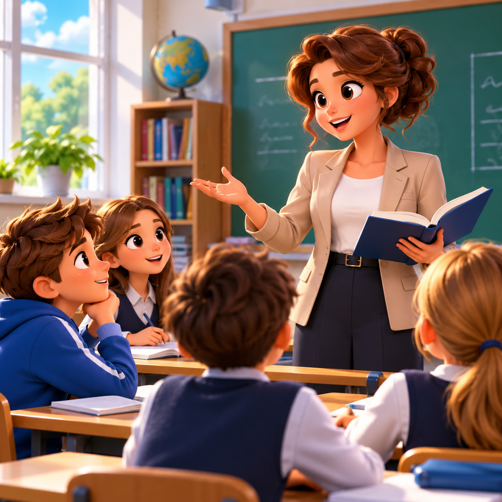
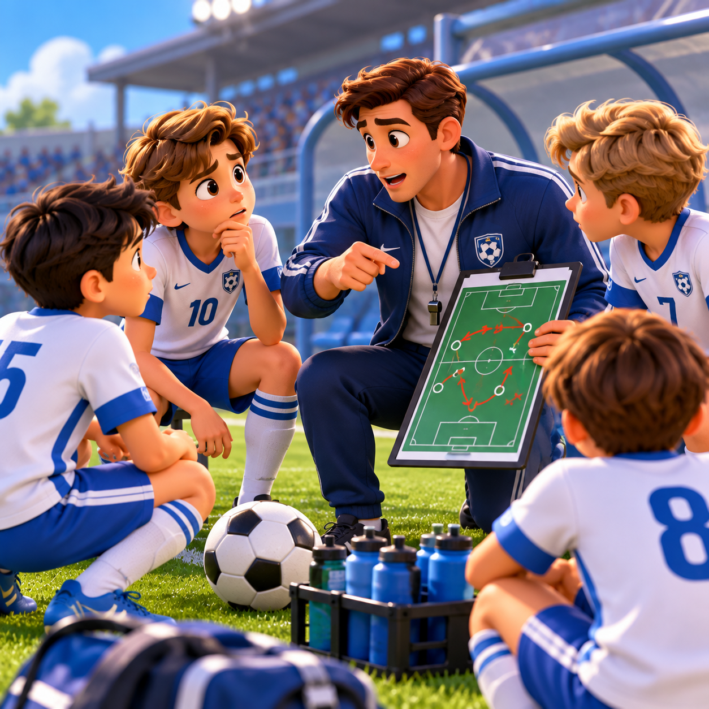
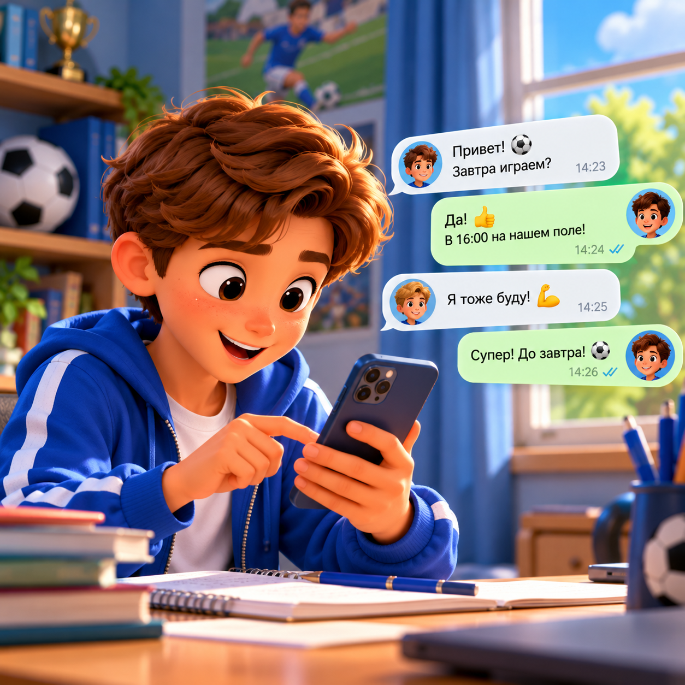
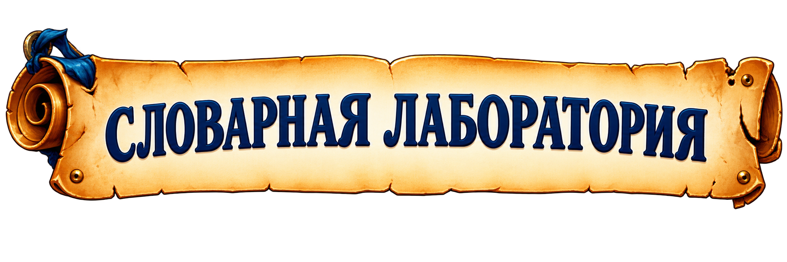
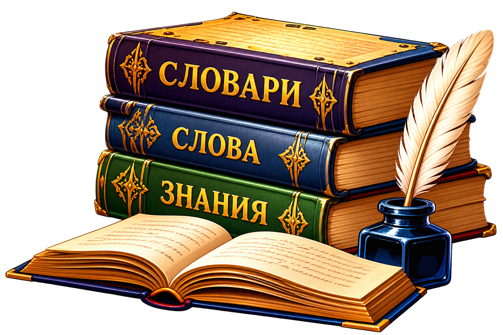
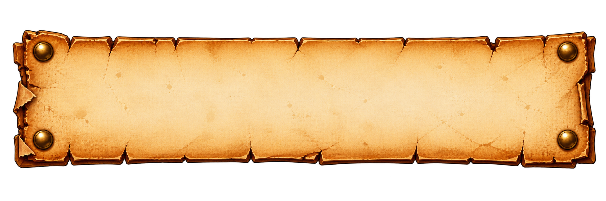
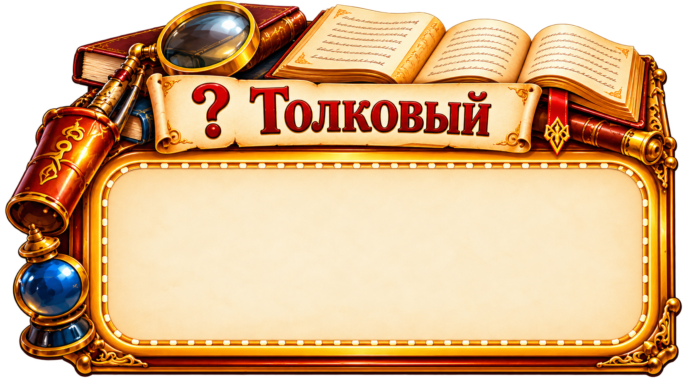
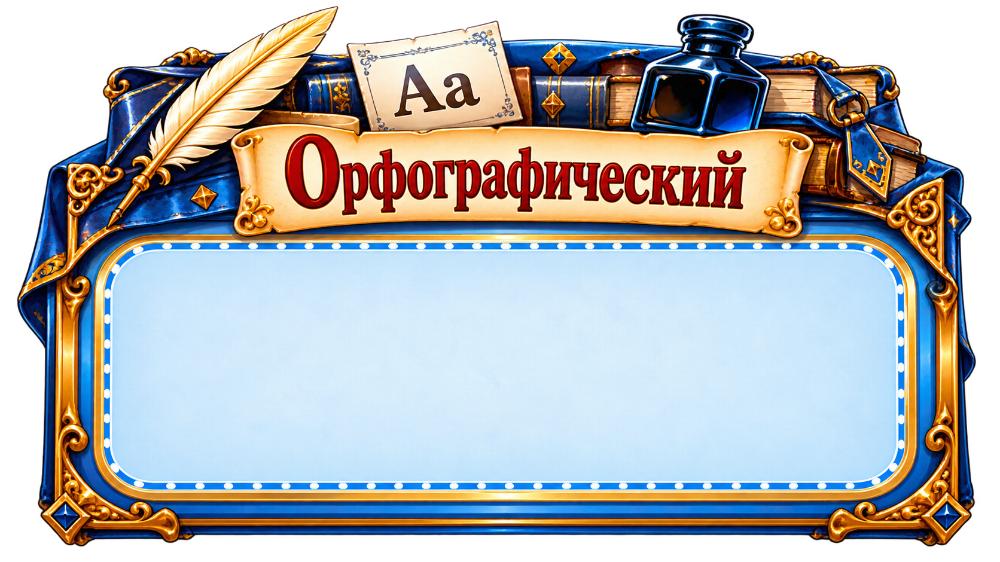
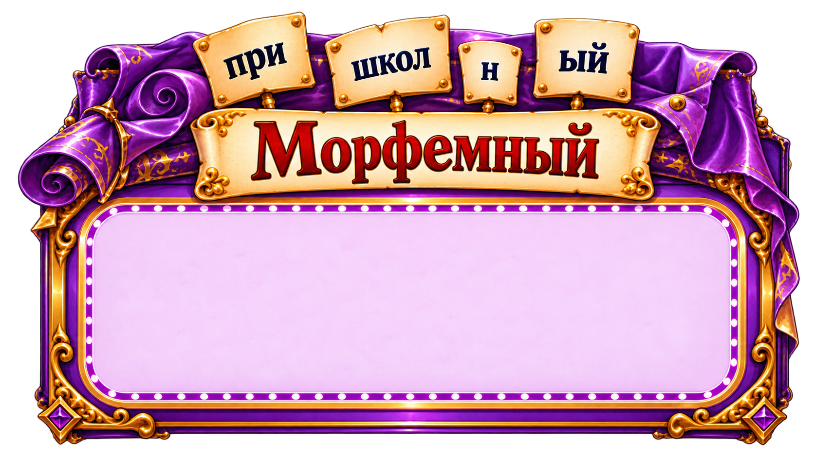
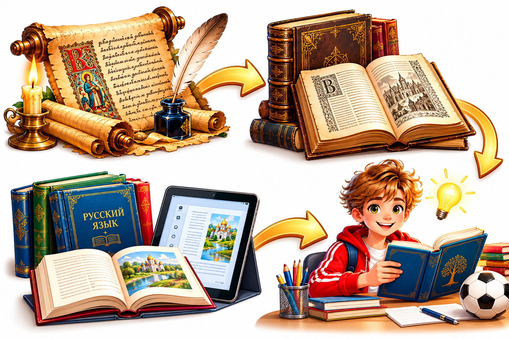

Зачем человеку язык?
Представь футбольный матч, в котором игроки, тренер и судья вдруг перестали понимать слова.
Что язык помогает сделать точнее всего?
Язык и его роль в жизни человека
Слушай внимательно
- Для чего человеку нужен язык?
- Какие виды речевой деятельности называются?
- Как язык помогает людям общаться?
Что относится к речевой деятельности?
Что умеет язык?
Язык — главное средство общения людей. С его помощью мы формулируем и передаём мысли, получаем знания, сохраняем их и передаём другим поколениям.
Где мы встречаем язык?

Учитель объясняет

Команда обсуждает тактику
Ребёнок читает

Друзья переписываются
Пытаемся объяснить без слов
Оставляем сообщение будущему
Проверь, как работает язык
Почему книга помогает людям передавать знания через сотни лет?
Распредели действия
Перетащи карточки в нужную область. На телефоне: нажми карточку, затем область.
Как мысль переходит от одного человека к другому?
Нажимай карточки по порядку. Правильная цепочка начинается с человека.


Разложи ситуации по словарям

Перед тобой ситуации из реальной жизни. Перетащи каждую карточку к тому словарю, который поможет решить задачу.



Как знания доходят до нас?

Способы записи меняются, но язык позволяет сохранять и передавать знания от поколения к поколению.
Что потеряло бы человечество, если бы люди могли говорить, но не умели записывать речь?
Финальная тренировка
Главная роль языка в обществе —
Какое действие помогает сохранить знания для будущих поколений?
Что точнее передаёт сложную мысль?
Миссия выполнена!
Ты разобрался, зачем человеку и обществу нужен язык.